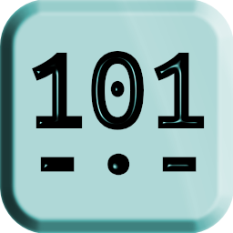
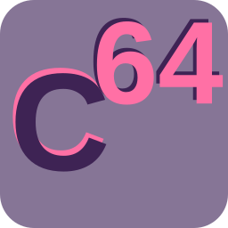

0 // WELCOME
My name is John, I'm a software engineer and puzzle designer, and this is my personal website.
I design and build interactive web infrastructure and puzzle systems at ARGHouse, supporting the development of live Alternate Reality Games (ARGs) and immersive interactive experiences. My work bridges narrative design, cryptographic puzzle development, and full-stack web engineering to create dynamic campaigns that engage players across digital platforms.
Outside ARGHouse, I also have nine years of professional experience with software engineering. Including 6 years of experience with full-stack web development. Some of my independent software projects are listed below.
1 // SOFTWARE PROJECTS
1.0 // Mornay

Page: mornary.com
Summary:
Mornary is an application I am building to explore generative steganography. It converts binary data into Morse code that decodes to plausible English text, hiding the true payload in plain sight. The app is carrier-agnostic and robust enough to survive human relay, making it a unique generative steganography tool.
1.1 // Codon64

Page: codon64.com
Summary:
Codon64 is a novelty encryption algorithm I created which uses DNA nucleotides (A, G, C, and T) as the only characters of the ciphertext. It is implemented with JavaScript on its own website.
2 // LATEST BLOG POSTS
Article: Spectrograms Case Study Published: 2026-08-30
Abstract:
A spectrogram is a visual representation of the spectrum of frequencies of a signal over time. Spectrograms, especially in audio signals, are an extremely common technique used in ARGs and puzzle hunts. They are so common that, on their own, they present virtually no challenge to those with a modicum of ARG experience. This article serve as a case study of my exploration of the medium of spectrograms and dives into ways to increase variety and difficulty in spectrogram-based puzzles.